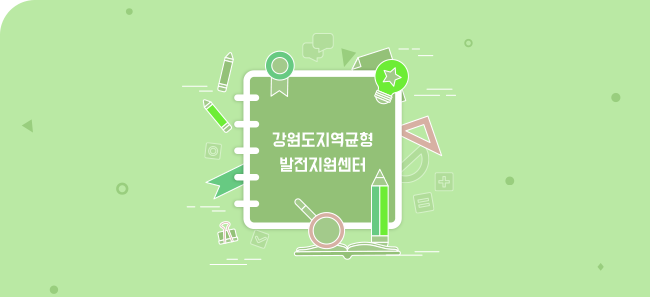

기획조정실
| 성명 | 부서 | 주요업무 | 전화번호 | 이메일 |
|---|---|---|---|---|
| 이원학 | 기획조정실 | 기획조정실 총괄 | 033-250-1361 | 메일 |
| 이태경 | 기획홍보팀 | 기획홍보팀 총괄, 경영평가 | 033-250-1315 | 메일 |
| 신대익 (교육연수) | 기획홍보팀 | 홍보(홈페이지, 포럼) | 033-250-1372 | 메일 |
| 한상용 | 기획홍보팀 | 예산, 대외협력, 전국시도연 | 033-250-1328 | 메일 |
| 이원정 | 기획홍보팀 | 대외협력, 자료실, 경영공시 | 033-250-1326 | 메일 |
| 이종복 | 기획홍보팀 | 홍보, 포럼, 서무 | 033-250-1383 | 메일 |
| 정유진 | 기획홍보팀 | 자료실, 서무 | 033-250-1318 | 메일 |
| 김소현 | 기획홍보팀 | 임원실 | 033-250-1301 | 메일 |
| 안용주 | 연구지원팀 | 연구지원팀 총괄 | 033-250-1306 | 메일 |
| 이혜영 | 연구지원팀 | 연구지원,발간,포럼 | 033-250-1375 | 메일 |
| 이지선 | 연구지원팀 | 연구지원,포럼,서무 | 033-250-2929 | 메일 |
분권연구실
| 성명 | 직급 | 주요업무 | 전화번호 | 이메일 |
|---|---|---|---|---|
| 김범수 | 실장 | 통일·북방, 한반도 통합, 동북아관계 | 033-250-1354 | 메일 |
| 전만식 | 연구위원 | 물환경관리, 수자원정책 | 033-250-1324 | 메일 |
| 김경남 | 연구위원 | 재난안전, 산림, 환경정책 | 033-250-1325 | 메일 |
| 황규선 | 연구위원 | 지역경제, 공공경제 | 033-250-1347 | 메일 |
| 전지성 | 연구위원 | 지방재정, 성과평가 | 033-250-1334 | 메일 |
| 조근식 | 연구위원 | 복지, 지방재정 | 033-250-1356 | 메일 |
| 권오영 | 연구위원 | 공공정책, 지방자치 | 033-250-1336 | 메일 |
| 양 철 | 부연구의원 | 동북아협력, 남북관계, 북중관계 | 033-250-1346 | 메일 |
| 김문숙 | 책임연구원 | 수환경, 수자원정책 | 033-250-1313 | 메일 |
| 오윤정 | 책임연구원 | 교육, 과학기술정책, 과학문화 | 033-250-1342 | 메일 |
혁신성장실
| 성명 | 직급 | 주요업무 | 전화번호 | 이메일 |
|---|---|---|---|---|
| 유승각 | 실장 | 관광개발, 관광정책 | 033-252-1333 | 메일 |
| 김석중 (연구연수) | 선임연구위원 | 지역산업, 정책 | 033-250-1393 | 메일 |
| 한영한 | 선임연구위원 | 수환경 | 033-250-1352 | 메일 |
| 이영주 (연구연수) | 선임연구위원 | 관광 정책 | 033-250-1365 | 메일 |
| 박상용 | 연구위원 | 첨단융복합과학기술 산업정책, 생태환경 | 033-250-1307 | 메일 |
| 김충재 | 연구위원 | 수산해양, 에너지, 응용생물 | 033-252-1312 | 메일 |
| 정대현 | 부연구위원 | 기술 경영 | 033-252-1335 | 메일 |
| 유영심 | 부연구위원 | 문화, 관광개발 | 033-250-1387 | 메일 |
| 백영미 | 부연구위원 | 중소기업·소상공인 산업육성 | 033-250-1367 | 메일 |
| 양희원 | 부연구위원 | 관광경제, 관광정보 | 033-252-1338 | 메일 |
| 정윤희 | 부연구위원 | 환경계획, 경관 및 조경계획 | 033-250-1363 | 메일 |
| 양지원 | 책임연구원 | 신산업, 사회적경제 | 033-250-1316 | 메일 |
| 정경은 | 책임연구원 | 4차산업, 에너지 | 033-252-1343 | 메일 |
| 황보원주 | 책임연구원 | 과학기술 | 033-252-1331 | 메일 |
지역개발실
| 성명 | 부서 | 주요업무 | 전화번호 | 이메일 |
|---|---|---|---|---|
| 추용욱 | 실장 | 도시설계, 도시재생 | 033-250-1395 | 메일 |
| 노승만 | 선임연구위원 | 도시계획, 교통 | 033-250-1337 | 메일 |
| 류종현 | 선임연구위원 | 도시계획,지역계획 | 033-250-1332 | 메일 |
| 강종원 | 선임연구위원 | 농촌계획 농업·농촌정책 | 033-250-1322 | 메일 |
| 지경배 | 선임연구위원 | 일자리정책·사회적경제·커뮤니티개발 | 033-250-1357 | 메일 |
| 김재진 | 연구위원 | SOC, 교통 | 033-250-1396 | 메일 |
| 조명호 | 연구위원 | 도시 및 지역계획 | 033-250-1364 | 메일 |
| 김태동 | 연구위원 | 레저·스포츠정책 | 033-250-1366 | 메일 |
| 박재형 | 부연구위원 | 농산업, 지역개발 | 033-250-1355 | 메일 |
| 장진영 | 부연구위원 | 교통계획 | 033-250-1330 | 메일 |
| 김수연 | 책임연구원 | 지역개발, 도시계획 | 033-250-1362 | 메일 |
| 정영호 | 책임연구원 | 에너지경제, 응용경제 | 033-250-1341 | 메일 |
사무국
| 성명 | 부서 | 주요업무 | 전화번호 | 이메일 | |||||
|---|---|---|---|---|---|---|---|---|---|
| 신동훈 | 사무국 | 사무국 총괄 | 033-250-1376 | 메일 | |||||
| 류연주 | 총무감사팀 | 총무감사팀 총괄(인사) | 033-250-1327 | 메일 | |||||
| 박승주 | 총무감사팀 | 임원수행,청사관리 | 033-250-1373 | 메일 | |||||
| 김혜선 | 총무감사팀 | 복리후생,교육 | 033-250-1340 | 메일 | |||||
| 장용민 | 총무감사팀 | 복무,서무,전산 | 033-250-1317 | 메일 | |||||
| 이영관 | 총무감사팀 | 청사관리(설비) | 033-250-1390 | 메일 | |||||
| 최영순 | 총무감사팀 | 청사관리(설비) | 033-250-1390 | 메일 | |||||
| 정지성 | 총무감사팀 | 청사관리(보안) | 033-250-1380 | 메일 | |||||
| 박인순 | 총무감사팀 | 청사관리(미화) | 033-250-1382 | 메일 | |||||
| 최승학 | 총무감사팀 | 청사관리(보안) | 033-250-1380 | 메일 | |||||
| 박광예 | 총무감사팀 | 청사관리(미화) | 033-250-1382 | 메일 | |||||
| 곽종애 | 총무감사팀 | 청사관리(미화) | 033-250-1382 | 메일 | |||||
| 조수진 | 재무회계팀 | 재무회계팀 총괄(결산,계약,세무) | 033-250-1370 | 메일 | |||||
| 윤 희 | 재무회계팀 | 지출,여비,원인행위,법인카드 | 033-250-1384 | 메일
| 임구민 | 재무회계팀 | 원인행위,서무 | 033-250-2936 | 메일 | |
정책연구원/대외협력관
| 성명 | 직책 | 전화번호 | 이메일 |
|---|---|---|---|
| 안권용 | 정책연구위원 | 033-250-1394 | 메일 |
| 어승담 | 정책연구위원 | 033-250-1397 | 메일 |
| 이만자 | 대외협력관 | 033-250-1392 | 메일 |
| 고욱성 | 초빙연구위원 | 033-250-1399 | 메일 |
| 조경환 | 초빙연구위원 | 033-250-1398 | 메일 |
| 최진업 | 초빙연구위원 | 033-250-1391 | 메일 |
강원학연구센터
강원학연구센터
강원도와 함께하는 강원학연구센터입니다.
강원학연구센터 바로가기-
운영방향
- 목표 : 강원특별자치도 발전의 초석 마련을 위한 ‘강원학‘ 이론 정립 및 아이디어 뱅킹 사업 추진
- 추진전략
- 강원도 유·무형 지역 자원의 가치 발굴
- 건전한 공동체/문화 육성
- 지역의 가치 확산과 대중화
- 추진방법
- 3대 전략 수립 및 사업 수행
- 이슈별 아이디어뱅킹을 위한 연구 및 포럼 개최
- ※ 강원학연구센터의 역할: 강원특별자치도의 발전을 이끄는 이론의 개발과 정립을 위해, 신강원학 활동에 시범을 보이고 지역사회를 리드
- ※ ‘신(新)’강원학 이란: 사회 諸분야에 축적된 유·무형의 자산이 강원특별자치도의 발전에 소재로 활용될 수 있도록 하는 이론적 틀을 구축하는 활동
-
주요추진사업
- 유무형의 지역자원 가치화를 위한 연구 추진
- 잠재력 있는 역사/문화/자연자원을 발굴하여 가치 확산 기반 마련
- 지역 자원의 세계화 추진을 통한 가치 극대화 도모
- 전승할 가치가 있는 지역 자원의 유산화 방안 모색
- 건전한 공동체/문화육성 연구 추진
- 개방형 공동체 의식, 통합형 문화육성을 이론적 틀 구축
- 도민의 국제화 지향, 한반도 중심지 인식 함양 연구
- 지정학적 강점과 호국자산 활용 방안 연구
- 지역자원의 미래 가치 확산과 대중화 계기 마련
- 지역 대학·연구기관 간 협업을 통한 네트워크 강화
- 연구 성과물의 공유 및 확산
- 지역 고유가치에 대한 공감대 형성
-
2023년 계획
- 자원의 가치화 전략 연구
- ㆍ지역의 잠재력 있는 역사/문화/자연자원의 발굴 및 가치 확산 기반 마련을 위한 현안‧정책 연구 수행 및 전문가 포럼 개최
- 강원학 아카이브 구축
- 강원학 아카이브 구축 센터 운영
- ‘강원학 현황과 과제’ 발간
- 건전한 공동체/문화 육성 연구
- 개방형 공동체 의식, 통합형 문화육성을 위한 이론적 틀 구축
- 강원특별자치도민의 국제화 지향, 한반도 중심지 인식 함양 연구, 지정학적 강점과 호국자산 활용 방안 연구 및 전문가 포럼 개최
- 제6회 강원학대회
- 강원학 이론 정립 및 아이디어 뱅킹 사업 추진을 위한 다양한 논의의 확대ㆍ활성화의 장 마련
- 도내·외 전문가 참여, 분과별 발표 및 토론회 추진
- 강원도 지역학연구발표대회 (공동개최)
- 강원도문화원연합회와 공동개최하는 지역학 연구 성과 공유 및 지역학 연구자 교류의 장 마련
| 성명 | 직급 | 전화번호 | 이메일 |
|---|---|---|---|
| 김경남 | 센터장 | 033-250-2980 | 메일 |
| 정지연 | 전문연구원 | 033-250-2980 | 메일 |
| 유혜정 | 전문연구원 | 033-250-2982 | 메일 |
경제분석공공평가센터
| 성명 | 부서명 | 직급 | 전화번호 | 이메일 |
|---|---|---|---|---|
| 전지성 | 경제분석공공평가센터 | 센터장 | 033-250-1334 | 메일 |
| 김진영 | 경제분석공공평가센터 | 연구원 | 033-250-2910 | 메일 |
| 백지훈 | 경제분석공공평가센터 | 연구원 | 033-250-2909 | 메일 |
탄광지역발전지원센터
탄광지역발전지원센터
탄광지역발전지원센터 연구사업과 탄광지역 관련 정보 등을 제공하고 있습니다.
탄광종합정보시스템 바로가기-
운영방향
- 폐광기금 사업 효율적 사용·관리를 위한 평가체계 고도화
- 자생력 있는 대체산업 발굴을 위한 협의체 운영 및 시군 교류 활성화
- 폐특법 및 강원랜드법 제·개정 연구 지원 기능 강화
- 석탄산업유산 유네스코 세계유산 등재를 위한 체계적 보존과 활용방안 연구
-
주요추진사업
- 폐광지역 미래전략 연구
- 폐광기금 운용 성과평가사업
- 탄광지역 중장기계획 지원사업
- 탄광지역 업무관계자 교류협력사업
- 탄광지역 관광 트렌드 분석사업
- 탄광지역 과학문화 활성화 사업
- ‘새빛마루’ 소식지 발간사업
-
2023년 계획
- 폐특법 관련 제도 개선 등 정책 지원기능 강화 및 입법화를 위한 관련 활동 지원기능 확대
- 폐광지역개발사업 성과평가 고도화, 컨설팅 강화
- 지속 가능한 대체산업 발굴 관련 T/F팀 운영 확대로 사업고도화 및 현장지원 기능 강화
- 석탄산업유산의 유네스코 등재 2차 연도 연구 추진
- 지역맞춤형 사업발굴 등 현장성 강화를 위한 업무·소통 채널 마련을 통해 4개 시군 스마트작업실 운영 활성화
- 관-민 정보교류 및 소통 지원, 대외 홍보 강화
| 성명 | 직급 | 전화번호 | 이메일 |
|---|---|---|---|
| 한영한 | 센터장 | 033-250-1352 | 메일 |
| 김정섭 | 팀장 | 033-250-2961 | 메일 |
| 김영미 | 연구원 | 033-250-2960 | 메일 |
| 김예진 | 연구원 | 033-250-2924 | 메일 |
| 송주하 | 연구원 | 033-250-2965 | 메일 |
| 심재희 | 연구원 | 033-250-2987 | 메일 |
강원도과학문화거점센터
강원도과학문화거점센터
과학기술문화 향유를 통한 강원도 과학기술문화의 저변 확대
및 창의적 인재 양성
-
주요추진사업
- 지역 과학기술문화 정책 지원 강화
- 과학기술문화 활성화를 위한 교육·체험 프로그램 운영
- 4차 산업혁명 대비 지역 역량 강화
- 과학기술문화 활성화를 위한 거버넌스 체계 구축
-
2023년 계획
- 강원도 중장기 과학기술 문화 활성화 정책 및 연도별 실행계획 수립 지원
- 강원도 과학문화 향유도 조사·분석
- 강원도과학문화협의회 구성·운영
- 강원도 과학기술 문화 활성화 포럼·운영
- 강원도 과학문화 온·오프라인 홍보체계 운영
- 강원도 미래과학기술 온라인 강연 운영
- 지역주민 대상 과학문화 교육·체험 프로그램 운영
- 지역 과학문화 공동체 운영 지원
| 성명 | 직급 | 전화번호 | 이메일 |
|---|---|---|---|
| 박상용 | 센터장 | 033-250-1307 | 메일 |
| 박신애 | 팀장 | 033-250-2917 | 메일 |
| 이승우 | 팀장 | 033-250-2928 | 메일 |
| 강혜진 | 팀원 | 033-250-2921 | 메일 |
| 박세리 | 팀원 | 033-250-2949 | 메일 |
강원도도시재생지원센터

강원도도시재생지원센터
강원도 도시재생과 사람을 잇는 따뜻한 바람
강원도도시재생지원센터 바로가기-
운영방향
- 비전 : 도시재생 차별화 전략 구축
- 운영목표
- 도시재생 모니터링 체계 확립 및 거버넌스 강화
- 교육프로그램 개선을 통한 전문성 강화
- 정책연구기반 도시재생 성과 확산
-
주요추진사업
- 강원도 도시재생 정책지원
- 강원도 도시재생 모델(아이디어) 발굴 및 제도, 정책방향 연구
- 컨설팅 · 모니터링 등을 통합 사업 시스템 지원
- 도시재생지원센터 협의회 및 유관기관의 협력체계 구축
- 강원도 도시재생 뉴딜 교육 프로그램 운영
- 강원도 도시재생 사업성과 대내 외 공유
- 온 · 오프라인 도시재생 홍보시스템 강화
- 도시재생 행사 참여 및 네트워크 강화
- 강원도 도시재생 교육지원 및 프로그램 운영
- 강원도 도시재생대학원대학 운영(광역단휘 도시재생 역량교육)
- 도시재생 교육프로그램 개발 및 교육 지원
- 도시재생 교육 DB 구축 및 인력 지원체계 마련
-
2023년 계획
- 도시재생 컨설팅 지원
- 강원도 도시재생 모니터링 체계 확립
- 협력적 거버넌스 체계 구축 및 확산
- 강원도 도시재생 정책현안 공유
- 지역연계사업 발굴 및 기획
- 온라인 정보 플랫폼 운영
- 도시재생 아카이브 구축
- 교육프로그램 보급 및 확산
- 도시재생 교육전문가 pool구축
| 성명 | 직급 | 전화번호 | 이메일 |
|---|---|---|---|
| 추용욱 | 센터장 | 033-250-1395 | 메일 |
| 이현애 | 실장 | 033-250-2933 | 메일 |
| 서인석 | 실장 | 033-250-2977 | 메일 |
| 한상필 | 실장 | 033-250-2978 | 메일 |
| 김남혁 | 팀장 | 033-250-2945 | 메일 |
| 송은아 | 팀장 | 033-250-2986 | 메일 |
| 김형정 | 팀장 | 033-250-2986 | 메일 |
| 허예림 | 팀장 | 033-250-2939 | 메일 |
강원도지역균형발전지원센터

강원도지역균형발전지원센터
-
운영방향
- 비전 : 도민 모두가 누리는 행복공동체 강원
- 운영목표
- 행정(도)과 지역주민(시군)간의 협력 거버넌스 구축
- 수요자(도민) 중심 균형발전사업 및 지역소멸위기대응 사업 발굴·추진
- 풀뿌리형 협력체계 구축을 통한 주민 체감형 사업 추진
- 지역균형발전사업에 대한 전문성과 신뢰성 확보
-
주요추진사업
- 지역균형발전사업 운영·지원
- 지역소멸위기대응 사업 운영·지원
- 사업 발굴 ·평가 및 컨설팅
| 성명 | 직급 | 전화번호 | 이메일 |
|---|---|---|---|
| 류종현 | 센터장 | 033-250-1332 | 메일 |
| 이동관 | 팀장 | 033-250-2951 | 메일 |
| 유광철 | 연구원 | 033-250-2954 | 메일 |